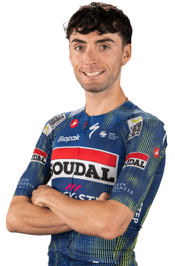

Gianmarco Garofoli
Datos Personales
- Gianmarco Garofoli
- 06/10/2002
- Italia
- SOUDAL QUICK-STEP
- 123

Multimedia
Equipo SOUDAL QUICK-STEP en la Vuelta Ciclista a España 2026.

Equipo SOUDAL QUICK-STEP en la Vuelta Ciclista a España 2026.